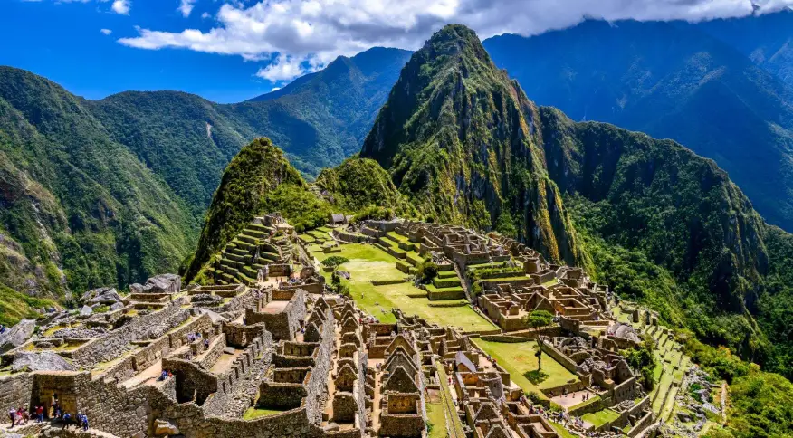
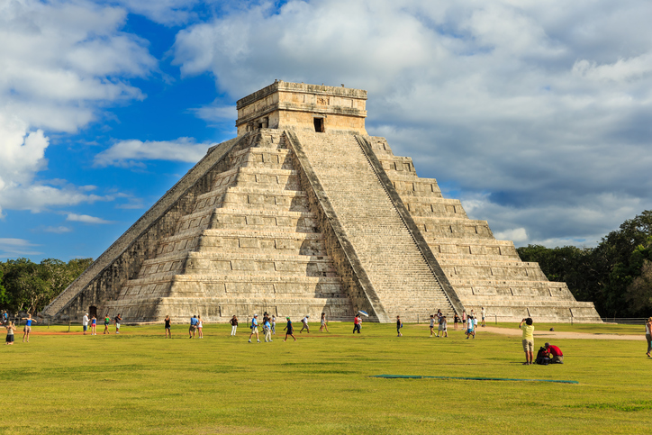

Cristo Redentor
Cristo Redentor é uma estátua art déco [1] que retrata Jesus Cristo, localizada no topo do morro do Corcovado, a 709 metros acima do nível do mar, com vista para parte considerável da cidade brasileira do Rio de Janeiro.

Machu Picchu
Machu Picchu também chamada "cidade perdida dos Incas", é uma cidade pré-colombiana bem conservada, localizada no topo de uma montanha, a 2 400 metros de altitude, no vale do rio Urubamba, atual Peru.

Chichén Itzá
foi uma grande cidade pré-colombiana construída pela civilização maia no final do período clássico. O sítio arqueológico está localizado no município de Tinum, no estado de Yucatán, México.